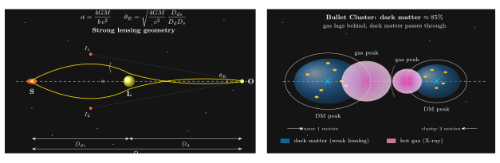

引力透镜如何称出看不见的暗物质?
上一节讲红移 — 光的波长被宇宙的膨胀拉长, 为我们提供了一把"尺子", 量出星系正在远离. 但光给宇宙学的馈赠远不止于此. 同一束光, 除了告诉我们"波长变化了多少", 还告诉我们"路径弯了多少". 弯曲的量, 决定于它沿途遇到的质量.
于是, 从爱丁顿 1919 年那次著名的日食观测开始, 光的偏折就从"一次对爱因斯坦的检验"进化为"一个称重工具". 今天, 最好的星系团质量估计, 靠的不是牛顿的 $F = GM/r^2$, 也不是 X 射线气体的温度, 而是背景星系被扭成了什么形状. 更震撼的是: 当我们把引力透镜"称出来"的质量与望远镜"看得见的"恒星和气体相比, 差了一个量级 — 剩下那 85% 到 90%, 就是我们今天所说的暗物质.
这一节, 我们把光的弯曲一步步收拢, 看看它是如何变成一把 "暗物质的秤" 的.
一、从偏折角到爱因斯坦环
我们在第 4 节推过, 一束光线以冲击参数 $b$ (光线与质量中心最接近距离) 掠过点质量 $M$ 时, 广义相对论给出的偏折角是
$$ \alpha = \frac{4GM}{b\,c^2}. \tag{1} $$
它比牛顿粒子图像 ($\alpha_{\text{N}} = 2GM/bc^2$) 大一倍 — 这多出的一半, 就是空间度规 $g_{ij}$ 被弯曲后对光线路径的贡献. 1919 年爱丁顿测到的, 正是这个 "2 倍". 但当年的目的是检验理论, 今天我们把公式反过来用: 测出 $\alpha$, 解出 $M$.
要把 (1) 用到宇宙学尺度, 得把三个距离区分清楚: 观察者到透镜的角径距 $D_d$, 到源的角径距 $D_s$, 透镜到源的角径距 $D_{ds}$. 考虑一个理想化的场景: 一个遥远的背景源 S, 一个前景质量 L, 三者完美地排在一条直线上. 由对称性, 光线在透镜所有方位都有相同的偏折, 观察者看到的像就是一个闭合的光环 — 爱因斯坦环. 令环对应的小角度为 $\theta_E$, 写下几何关系 $\theta_E D_s = \alpha(D_{ds})$, 再以 $b = \theta_E D_d$ 代入 (1), 得到
$$ \theta_E = \sqrt{\frac{4GM}{c^2}\cdot\frac{D_{ds}}{D_d D_s}}. \tag{2} $$
爱因斯坦环的半径不是一个随意的几何量, 它是一把嵌在天空上的"秤": 给定背景源与前景透镜的距离, 只要测出 $\theta_E$, 就能直接读出透镜的总质量 $M$. 不需要知道透镜发不发光, 不需要假设里面是恒星还是气体, 不需要理会内部物态 — 只要有引力, 它就被称进来.
让我们做一个数量级估算. 典型大型星系团 $M \sim 10^{15} M_\odot$, 取 $D_d \sim D_{ds} \sim D_s / 2 \sim 1\,\text{Gpc}$ 这样的宇宙学距离, 代入 (2):
$$ \theta_E \sim \sqrt{\frac{4 \times 6.7\!\times\!10^{-11} \times 2\!\times\!10^{45}}{(3\!\times\!10^8)^2}\cdot\frac{1}{3\!\times\!10^{25}}} \approx 1.4\!\times\!10^{-4}\ \text{rad} \approx 30''. $$
这正是 Abell 1689、Abell 2218 这类富星系团核心区给出的典型"弧"与环的半径. 半角分, 肉眼看不见, 但对哈勃、詹姆斯·韦伯这类望远镜是再直观不过的画面.

二、从完美对齐到多像、弧与剪切
完美共线只是教科书的理想. 现实中, 源、透镜、观察者几乎从不严格排在一条直线. 于是有两个极限要区分.
强引力透镜 (strong lensing). 当冲击参数与 $\theta_E D_d$ 同量级时, 偏折角足以把一个源的像分裂成两个、四个, 甚至拉成长弧. 最经典的案例是 1979 年 Walsh、Carswell 与 Weymann 报告的 Q0957+561 双像类星体 — 两张类星体的"像"之间距 6 角秒, 两像谱完全一致, 不是双星, 而是同一颗类星体被前景星系分成两份. 这是人类第一次直接观测到爱因斯坦 1936 年那篇短文预言的图像. 几年之内, "Einstein 十字" (一个类星体被一个椭圆星系劈成四像的十字形) 进入教科书.
对一个大星系团, 强透镜给出的是一整套富信息的景观: 核心附近多条蓝色弧 (Abell 2218 那些"蓝色香蕉"就是近处小星系被拉长的像), 外围一圈多像系统. 每一组多像都是方程 (2) 的几何约束, 多组联立, 就能反推透镜内部的质量分布, 精度可达 $1\%$.
弱引力透镜 (weak lensing). 但强透镜需要"近乎共线"这个几何苛刻条件, 一个星系团外围大部分背景星系只会被"轻轻扭一下" — 每个星系的椭率多了约 1% 的系统化偏置, 肉眼完全分辨不出来. 这个极限下我们必须走统计路线:
- 假设在一个"足够纯净"的天区里, 背景星系的本征椭率方向是各向同性的; 把它们的椭率矢量在二维上平均, 理论上应是零.
- 若存在前景质量, 它们的光会被切向剪切 (tangential shear $\gamma$), 椭率平均方向出现沿某一参考点的切向取向.
- 对大量星系统计上显著偏离零的那一点剪切, 就是前景的质量"影子".
典型的切向剪切量级只有 $\gamma \sim 0.01$. 要测得稳, 需要每平方度上千颗背景星系. 于是弱透镜是"望远镜密度游戏": Euclid 空间望远镜与智利的 Vera Rubin / LSST 地面巡天, 目标都是每平方度 30 至 50 颗质量可用的背景星系, 覆盖上万平方度 — 一把覆盖整个可见半球的"统计秤".
强透镜如同在质量里放一根精密探针, 弱透镜则是把一整件斗篷的褶皱捋平后读出内部的人形. 合起来, 我们对星系团的质量分布, 从内核几十千秒差到外围几个兆秒差距, 有了连续的重建.
三、称出暗物质: 总质量、气体、恒星的三本账
如果宇宙只有可见物质, 上面一节给出的"光学称"应当与光学目录 — 即我们真能看见的恒星与气体 — 对得上. 事实是完全对不上.
对一个典型大型星系团, 以 Coma 星系团为例, 引力透镜 (以及独立的 X 射线流体力学) 给出的总质量
$$ M_{\text{tot}} \sim 10^{15}\,M_\odot. $$
我们把这个总量拆成三块:
- 恒星质量 $M_{\text{star}}$: 望远镜直接看到的一切光学恒星光. 经典 $M/L$ 比给出 $M_{\text{star}} \approx (1\text{-}2)\times 10^{13}\,M_\odot$, 约占总量的 $1\%\text{-}2\%$.
- 热气体质量 $M_{\text{gas}}$: 星系团里弥漫着几千万度的电离气体, 发射 X 射线. Chandra、XMM-Newton 测到的热气体总量大约 $M_{\text{gas}} \approx 10^{14}\,M_\odot$, 约占总量的 $10\%$.
- 剩下的 $\approx 85\%\text{-}90\%$: 既不发光, 也不在 X 射线里, 仍然把背景星系的形状扭成了图 1 左那样. 这, 就是暗物质.
做一个粗但清晰的验算. 把"总质量 - 恒星 - 气体"平均到整个星系团体积, 再除以宇宙临界密度 $\rho_c = 3H_0^2/(8\pi G) \approx 9\times 10^{-27}\,\text{kg/m}^3$, 会得到在星系团尺度上 $\Omega_m \approx 0.3$ — 这与普朗克卫星从宇宙微波背景独立测到的 $\Omega_m = 0.315\pm 0.007$ 完全一致. 不同尺度、不同物理、不同数据集, 给出同一张账单. 物理学很少有比这更让人信服的结果.
还有一个极限检验. 对暗物质假说的最严苛拷问是: 是不是我们对引力的理解错了? 也许 $F \propto 1/r^2$ 在星系团尺度要修正 (MOND 路线). 如何区分? 我们需要一个场景: 可见物质与引力源在空间上分开. 一颗完美的"子弹" — 就是 Bullet Cluster.
四、Bullet Cluster: 让气体和暗物质分家
2006 年, 由 Clowe 等人牵头的团队公布了 1E 0657-56, 绰号"Bullet Cluster"(子弹星系团): 两个大型星系团正在发生高速对撞, 视线方向几乎正交于碰撞轴. 他们同时收集了两组独立数据:
- Chandra X 射线: 描绘热气体 (电磁相互作用强) 的密度等值线;
- 弱引力透镜 (Magellan、Hubble、VLT 联合): 从上万颗背景星系的形状统计, 重建总质量等值线.
如果星系团里 85% 的"看不见东西"其实是某种常规重子物质, 它应该和热气体一样, 在碰撞中被电磁相互作用减速, 两套等值线应当重合. 事实是:
- X 射线气体云由于电磁相互作用, 在两团接触后显著减速, 停留在两团的几何中间, 形成著名的"子弹"弓形激波;
- 而总质量的两个峰, 由弱透镜独立给出, 位置与两边星系团中的恒星几乎重合, 表明它们携带的绝大部分质量"穿"过了对方.
一句话: 在这个系统里, 可见物质 (气体) 被踩了刹车, 引力源 (总质量) 却沿惯性冲过去. 两者的峰在天空上相距几个角分, 等同于几百千秒差距 — 人眼在图 1 右那样的对比图里一望就懂.
Bullet Cluster 的峰分离几乎不可能用"修改引力"来解释 — 如果没有不发光的粒子, 那引力源就应该跟着可见物质走. 正因如此, 2006 年至今, 它被普遍视为"暗物质是新粒子, 而非引力律失败"的近乎直接证据. 今天我们已经在 30 多个碰撞星系团中看到类似的"峰分离"图样, 每一次都在为同一结论投票.
值得一提的历史脉络: 1936 年爱因斯坦在《Science》上发表短文, 定量写出了式 (2) 的雏形, 但按他当时的估计, 恒星之间的角距离太小, 这种环"没有希望观察到" (no hope to observe). 同年, 瑞士天文学家 Zwicky 立刻在《Physical Review》回信指出: 如果透镜是一整个星系呢? 那么环半径就不是毫角秒, 而是角秒甚至十角秒, 并且能"直接称出星系质量", 他还预言这是发现暗物质 (他 1933 年在 Coma 星系团已经用动力学推出的"缺失质量") 的关键工具. 历史在 43 年后追上他: 1979 年 Walsh-Carswell-Weymann; 2006 年 Bullet Cluster; 2020 年代的 Euclid 与 LSST, 一步步把他当年的猜想, 变成了今天最成熟的宇宙学测量之一.
最后补一个极限检查. 若取极限 $M \to 0$, 由 (1) 式 $\alpha \to 0$, 由 (2) 式 $\theta_E \to 0$ — 没有质量, 就没有透镜, 物理直觉一致. 相反极限 $M \to \infty$ 虽然数学上 $\theta_E$ 无界, 但实际上当 $r_s = 2GM/c^2$ 超过冲击参数时, 公式 (1) 的弱场近似失效, 光开始被捕获进视界, 这时我们就不再谈"透镜", 而谈"黑洞阴影" — 第 36 节要处理的对象. 引力透镜 $=$ 弱场的光路弯曲, 黑洞阴影 $=$ 强场极限, 两者连续衔接.
小结
"光是什么"这本书问了 32 节之后, 引力透镜给出一条新层面的回答: 光也是一把高灵敏度的秤. 只要给它一条前景质量的路径, 它的偏折角就把沿途所有质量忠实记录下来 — 发光的、不发光的, 统统包含. 于是光第一次让我们"看见了"暗物质的几何形状: 它比恒星多十倍, 比热气体多八倍, 和星系团的引力势阱严丝合缝. 下一节我们继续沿引力与光的交汇路径, 看当光从一口引力势阱里爬出来时, 它的频率会付出多少代价 — 引力红移, 又是另一种对度规的精密测量.
▲